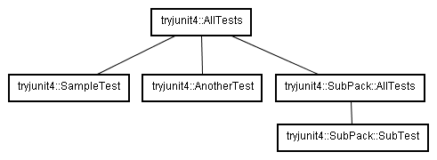

この文書は 表示 2.1 日本 (CC BY 2.1) によってライセンスされます。
この文書では、JUnit4
について動かしてみた結果をまとめています。
この文書は技術的に正確であることを意図して書いてはいますが、どこかで大嘘をついていたり、経年により陳腐化しているかもしれません。
もっと有効な方法があることを見逃しているかもしれません。
姉妹ページ、JUnit4をやってみよう(Rules編)、JUnit4をもっとやってみようももどうぞ。
サンプルソースはhttps://github.com/kazurof/tryjunit4 においてあります。
mainメソッドを付加する。
テストを実行のさせ方にはいろいろやり方があると思いますが、
全てのクラスにmainメソッドが用意してあると便利です。やり方としてはmainメソッドから、org.junit.runner.JUnitCore#main(String... args)
を呼びます。
例
package tryjunit4;
import static org.junit.Assert.assertEquals;
import org.junit.Test;
import org.junit.runner.JUnitCore;
public class SampleTest {
public static void main(String[] args) {
JUnitCore.main(SampleTest.class.getName());
}
@Test
public void testOne() {
String str = "りんご";
assertEquals(str.charAt(0), 'り');
}
}
実行結果（CLASSPATHで、junit4.11.jarが設定されているとする。）
>java tryjunit4.SampleTest JUnit version 4.11 . Time: 0 OK (1 test) >
サンプルコードを書いて動かしてみました。さらに、コンストラクタや staticイニシャライザや、インスタンスイニシャライザも検証してみます。
例
package tryjunit4;
import static org.junit.Assert.assertEquals;
import org.junit.After;
import org.junit.AfterClass;
import org.junit.Before;
import org.junit.BeforeClass;
import org.junit.Test;
import org.junit.runner.JUnitCore;
public class BeforeAfterTest {
static {
System.out.println("staticイニシャライザが呼ばれています。");
}
public static void main(String[] args) {
JUnitCore.main(AnotherTest.class.getName());
}
{
System.out.println("インスタンスイニシャライザが呼ばれています。");
}
public AnotherTest() {
System.out.println("コンストラクタが呼ばれています。");
}
@BeforeClass
public static void doBeforeClass() {
System.out.println("doBeforeClassしています。");
}
@Before
public void doBefore() {
System.out.println("doBeforeしています。");
}
@Test
public void testOne() {
String str = "りんご";
assertEquals(str.charAt(1), 'ん');
System.out.println("testOneしています。");
}
@Test
public void testTwo() {
String str = "りんご";
assertEquals(str.charAt(2), 'ご');
System.out.println("testTwoしています。");
}
@After
public void doAfter() {
System.out.println("doAfterしています。");
}
@AfterClass
public static void doAfterClass() {
System.out.println("doAfterClassしています。");
}
}
実行結果（CLASSPATHで、junit4.11.jarが設定されているとする。）
>java tryjunit4.BeforeAfterTest staticイニシャライザが呼ばれています。 JUnit version 4.11 doBeforeClassしています。 インスタンスイニシャライザが呼ばれています。 コンストラクタが呼ばれています。 .doBeforeしています。 testOneしています。 doAfterしています。 インスタンスイニシャライザが呼ばれています。 コンストラクタが呼ばれています。 .doBeforeしています。 testTwoしています。 doAfterしています。 doAfterClassしています。 Time: 0.047 OK (2 tests) >
これを見ると、
といった順番で動くようです。 結局テスト毎の前処理は、コンストラクタでも@Beforeアノテーションのメソッドでもできるみたいですね。 この緩やかさは冗長な気もしますが私の考えとしては、 フレームワークたるJUnitでのインスタンスの生成・消去の管理とJavaが行うインスタンスの生成・除去の管理を分ける意図があるのではと思います。
IDEがサポートしてくれれば話は別ですが、JUnit単体しかないときにはどうするかという話です。
やり方としてはorg.junit.runner.RunWithアノテーションと
org.junit.runners.Suite.SuiteClasseアノテーションを組み合わせて使います。
ここでは例として、
tryjunit4\suite\SampleTest.javatryjunit4\suite\AnotherTest.javatryjunit4\suite\subpack\SubTest.java
という、３個のテストケースを一度に実行したいとします。これらにはすでに、
org.junit.Testアノテーションがつけられたテストメソッドが
以下のように実装されているとします。
//SampleTestのテストメソッド例
@Test
public void testOne() {
String str = "りんご";
assertEquals(str.charAt(0), 'り');
System.out.println("SampleTestのtestOneメソッド");
}
これらを以下の図のように纏めたいとします。

そこで、以下のようなクラスを用意し実装します。
tryjunit4\suite\AllTests.javatryjunit4\suite\subpack\AllTests.java
package tryjunit4.suite;
import org.junit.runner.JUnitCore;
import org.junit.runner.RunWith;
import org.junit.runners.Suite;
import org.junit.runners.Suite.SuiteClasses;
@RunWith(Suite.class)
@SuiteClasses( { SampleTest.class, AnotherTest.class,
tryjunit4.subpack.AllTests.class })
public class AllTests {
public static void main(String[] args) {
JUnitCore.main(AllTests.class.getName());
}
}
package tryjunit4.suite.subpack;
import org.junit.runner.JUnitCore;
import org.junit.runner.RunWith;
import org.junit.runners.Suite;
import org.junit.runners.Suite.SuiteClasses;
@RunWith(Suite.class)
@SuiteClasses( { SubTest.class })
public class AllTests {
//まとめて実行するという観点からは無意味だが、
//一応mainメソッドを用意しておく。
public static void main(String[] args) {
JUnitCore.main(AllTests.class.getName());
}
}
実行例は以下のとおりです。（CLASSPATHで、junit4.0.jarが設定されているとする。）
>java tryjunit4.suite.AllTests JUnit version 4.0 .SampleTestのtestOneメソッド .AnotherTestのtestOneしています。 .AnotherTestのtestTwoしています。 .SubTestのtestOneしています。 Time: 0 OK (4 tests) >
テストケースクラスに対してorg.junit.runner.RunWithアノテーションと
org.junit.runners.Suite.SuiteClasseアノテーションをつけ、
含ませるテストケースクラスを指定することで一括実行ができました。
@RunWith(Suite.class)
@SuiteClasses( { SampleTest.class, AnotherTest.class,
tryjunit4.subpack.AllTests.class })
public class AllTests {
これで、テストケースクラスが大量にあっても一回の操作で実行できます。
ちなみにtryjunit4\suite\AllTests.java内で、全てのテストケースクラスを
列挙することはしませんでした。パッケージ毎にAllTests.java
を入れることで、テストケースのグループを小分けにして管理できるようにしたかったからです。
JUnit4.4では、org.junit.Assertクラスに、assertThat()メソッドが追加されました。 これを使ってテストケースを書いてみます。static importと組みあわせると、 こんなソースになります。
package tryjunit4.v44feature;
import static org.hamcrest.core.AllOf.allOf;
import static org.hamcrest.core.Is.is;
import static org.hamcrest.core.IsAnything.anything;
import static org.hamcrest.core.IsEqual.equalTo;
import static org.hamcrest.core.IsNot.not;
import static org.hamcrest.core.IsNull.notNullValue;
import static org.hamcrest.core.IsNull.nullValue;
import static org.junit.Assert.assertEquals;
import static org.junit.Assert.assertThat;
import org.junit.Test;
import org.junit.runner.JUnitCore;
public class AssertThatTest {
public static void main(String[] args) {
JUnitCore.main(AssertThatTest.class.getName());
}
@Test
public void testAssertThat() {
assertThat("みかんりんごすいか".substring(3, 6), is("りんご"));
}
@Test
public void testAssertEquals() {
assertEquals("みかんりんごすいか".substring(3, 6), "りんご");
}
@Test
public void testAssertThatTwo() {
assertThat("みかんりんごすいか".substring(3, 6), not("いちご"));
assertThat("みかんりんごすいか".substring(3, 6), anything());
assertThat("みかんりんごすいか".substring(3, 6), equalTo("りんご"));
assertThat("みかんりんごすいか".substring(3, 6), notNullValue());
String hoge = null;
assertThat(hoge, nullValue());
assertThat("みかんりんごすいか".substring(3, 6), allOf(equalTo("りんご"),
notNullValue()));
}
}
testAssertThat()メソッドと、testAssertEquals()メソッドの違いに注目ください。 testAssertEquals()メソッドでは、「メソッド名に述語」「第１引数に主語」「第２引数に目的語」という 順番にコードの内容が並んでいますが、 testAssertThat()メソッドでは、「第１引数に主語」「第２引数のメソッド名に述語」 「第２二引数のパラメータに目的語」の順番にコードの内容が並びます。「主語」「述語」「目的語」です。 これにより、人（正確には、英語圏の人ですね。）にとって読みやすいテストケースが 書けるようになります。
確かに、私自身も、「実際の値を入れるのは第1引数だっけ？第2引数だっけ？」というような 迷い方をたまにするので（苦笑）今回の機能追加はありがたいと思います。
この例の第2引数では、is()メソッドを使いましたが、 他のメソッドをtestAssertThatTwo()で使ってみました。 さらにどんなメソッドがあるかはＡＰＩリファレンスを参照してください。 （ドキュメントによれば、org.junit.matchers.JUnitMatchersというのもあるようです。 ＡＰＩリファレンスが無いのでソースを読むしかなさそうですね。） 他にも、自前でチェックメソッドを作って拡張できるようです。さらに、 Decoratorパターンにも なっているようで、論理式のように組み合わせることもできるようです。
ちょっと細かい話ですが、 今回は、
import static org.hamcrest.core.Is.is;
import static org.hamcrest.CoreMatchers.is;
JUnit4.4では、org.junit.Assume というクラスが追加されました。 Assumeは、テストを実施するうえでの前提条件を表明するためのクラスです。 動作は、org.junit.Assertとほぼ同等（まったく同じＡＰＩではないが、assertThatの機能により 同等の機能を持つ。）です。
たとえば、こんなソースを書いて動かすと、
package tryjunit4.v44feature;
import static org.hamcrest.CoreMatchers.is;
import static org.junit.Assume.assumeThat;
import org.junit.Test;
import org.junit.runner.JUnitCore;
public class AssumeTest {
public static void main(String[] args) {
JUnitCore.main(AssumeTest.class.getName());
}
@Test
public void testAssumeOne() {
assumeThat("apple", is("orange"));
System.err.println("testAssumeOne is success");
}
@Test
public void testAssumeTwo() {
assumeThat("apple", is("apple"));
System.err.println("testAssumeTwo is success");
}
}
こういう動きになります。（CLASSPATHで、junit-4.11.jarが設定されているとする。）
>java tryjunit4.v44feature.AssumeTest JUnit version 4.11 ..testAssumeTwo is success Time: 0.01 OK (2 tests) >
assumeThat()は、assertThat()と同様にテストを行います。 もしassumeThat()での検証に失敗した場合、JUnitフレームワークはテストメソッドのの残りの 処理をせずに、テストを成功したものと扱います。ソースでいうと、testAssumeOne()の assumeThat("apple", is("orange")); は失敗するのですが、 その後のコンソール呼び出しが行われていません。
Assumeはテストをする上での前提条件をテストするための機能です。 もしも、前提条件が崩れるのならば、後に続くテストは無意味と判断し テスト全体に対して影響を与えないようにテスト成功として扱うという意味になります。 （私自身の解釈の話なので、本当にこういう意図かとは言い切れませんが。。。） たとえば、多様な環境でテストする必要がある場合に、環境依存なテスト （ＯＳの種類が絡んでくるテストなど） を作りたい場合があるかと思います。そういうときに便利というわけです。
別の言い方をすれば、論理演算でいうところの論理包含、いわゆる「ならば」の意味の反映であるとも言えると思います。
個人的な意見： 前提がこけたときはテストは成功扱いなのですが、 こういう場合どこかに通知する機能が欲しいかなと思います。
JUnit4.4では、ある特定のシナリオ下ではなく、どんな場合でも成立する条件を記述するための 機能が追加されました。けど、どうもまだドキュメントが十分じゃないようで、 とりあえずわかったところを書いてみます。
たとえば、こんなソースを書くと、
package tryjunit4.v44feature;
import static org.hamcrest.CoreMatchers.is;
import static org.hamcrest.CoreMatchers.not;
import static org.junit.Assert.assertThat;
import static org.junit.Assume.assumeThat;
import org.junit.experimental.theories.methods.api.TestedOn;
import org.junit.experimental.theories.methods.api.Theory;
import org.junit.experimental.theories.runner.api.Theories;
import org.junit.runner.JUnitCore;
import org.junit.runner.RunWith;
@RunWith(Theories.class)
public class TheoriesTest {
public static void main(String[] args) {
JUnitCore.main(TheoriesTest.class.getName());
}
@Theory
public void multiplyIsInverseOfDivide(@TestedOn(ints = { 0, 5, 10 })
int amount, @TestedOn(ints = { 0, 1, 2 })
int m) {
System.err.println("amount->" + amount + " m ->" + m);
assumeThat(m, not(0));
System.err.println("m は、 " + m + " です。テストをします。");
assertThat((amount * m) / m, is(amount));
}
}
こんな結果が出ます。（CLASSPATHで、junit4.4.jarが設定されているとする。）
>java tryjunit4.v44feature.TheoriesTest JUnit version 4.4 .amount->0 m ->0 amount->0 m ->1 m は、 1 です。テストをします。 amount->0 m ->2 m は、 2 です。テストをします。 amount->5 m ->0 amount->5 m ->1 m は、 1 です。テストをします。 amount->5 m ->2 m は、 2 です。テストをします。 amount->10 m ->0 amount->10 m ->1 m は、 1 です。テストをします。 amount->10 m ->2 m は、 2 です。テストをします。 Time: 0.14 OK (1 test) >
「定理」ということで、多種多様なパラメータに対して正しく動作することを チェックするようなテストが書けます。テストメソッドにパラメータを 設定することができてテストを繰り返し動作させることができるようですね。 しかも、パラメータが複数ある場合は、組み合わせを全て網羅してくれます。
Theoriesのクラスのパッケージ名から判断すると、この機能はまだ実験的な 位置づけのようです。しかし、機能そのものは便利だと思います。 テスト用のサンプルデータをソースコード内でなく、アノテーションという 別個の場所につけられるというのはフレームワーク内の決め事としては 適切なものではないでしょうか？ たとえば、 石井さんのページでは、テスト用のデータと、テストのシナリオ（処理の流れ）を分離する 枠組みが語られていますが、JUnitの枠内でそういうことの決め事が定まれば、 多くの人が共通した形式のテストを作ったり、メンテナンスするという状況にできると思います。
この機能は、AgitorとかJUnitFactoryとかテストケースを自動生成する ツール向けという側面もあるようです。今後に期待というところでしょうか。
この文書は
表示 2.1 日本 (CC BY 2.1)
によってライセンスされます。